Morfotectónica y geomorfología estructural#
La morfotectónica (o tectónica geomorfológica) se enfoca en cómo los procesos tectónicos activos y a gran escala (levantamiento, subsidencia, deformación) construyen la topografía y cómo podemos usar las formas del paisaje para entender y cuantificar esos procesos [Burbank and Anderson, 2011].
Important
Objetivos de aprendizaje:
Diferenciar entre el control estructural pasivo y la morfotectónica activa en la formación del relieve.
Identificar las geoformas características de diferentes ambientes tectónicos (divergentes, convergentes y transformantes).
Comprender la relación entre el esfuerzo tectónico, la deformación de las rocas y el patrón de drenaje resultante.
Analizar ejemplos reales de morfotectónica en el territorio colombiano (ej. Fallas de Romeral e Ibagué).
Por otro lado, la geomorfología estructural se enfoca en cómo la estructura geológica preexistente y pasiva (el tipo de roca -litología-, su disposición -pliegues- y sus fracturas -fallas, diaclasas-) controla la forma del paisaje a través de la erosión diferencial.
Aunque están íntimamente relacionados y a menudo se superponen, la geomorfología estructural y la morfotectónica se diferencian principalmente en su enfoque y escala de análisis. La geomorfología estructural describe cómo la anatomía geológica pasiva controla la forma del relieve, mientras que la morfotectónica estudia cómo los procesos tectónicos activos construyen ese relieve a gran escala.
Paisajes Tectónicos al Interior Continental#
En las regiones estables del interior de los continentes, lejos de los bordes de placa activos, el relieve está fuertemente controlado por la estructura de la roca y la erosión diferencial. Un cratón es la porción más antigua, estable y rígida de la litosfera continental. Son los núcleos ancestrales de los continentes, formados y estabilizados durante el Precámbrico (hace más de 540 millones de años), y no han sido afectados significativamente por la actividad tectónica desde entonces. Un escudo es la región de un cratón donde las rocas del basamento cristalino (rocas ígneas y metamórficas del Precámbrico) están expuestas directamente en la superficie.
Debido a miles de millones de años de erosión, los escudos son típicamente áreas de bajo relieve, como extensas llanuras suavemente onduladas o peneplanicies. Son el “esqueleto” del continente a la vista. Como ejemplos clásicos están el Escudo Canadiense, el Escudo Báltico en Escandinavia, y aquí en Sudamérica, el Escudo Guayanés y el Escudo Brasileño, que juntos forman el Cratón Amazónico.
Una plataforma es la región de un cratón donde el basamento cristalino antiguo está cubierto por una capa relativamente delgada de rocas sedimentarias más jóvenes, depositadas de forma horizontal o con un buzamiento muy suave. Estas rocas sedimentarias se depositaron en mares interiores poco profundos que inundaron el cratón en diferentes momentos del Fanerozoico. La topografía de las plataformas es la que da lugar a los paisajes de mesas, buttes y cuestas que discutimos a continuación.
{kind=link}
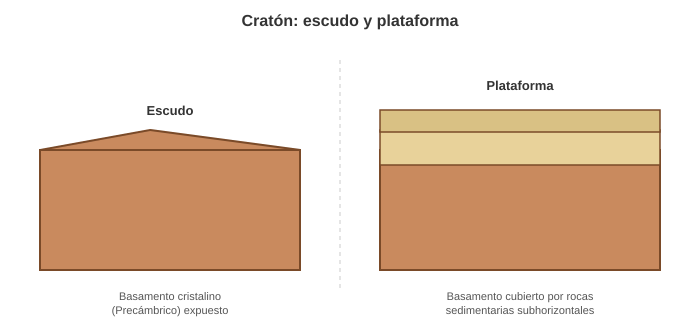
Fig. 7 Diferencia entre un escudo (basamento cristalino expuesto) y una plataforma (basamento cubierto por sedimentos subhorizontales). Elaboración propia.#
Estratos Horizontales#
Cuando las capas de roca sedimentaria son horizontales, la erosión diferencial (el desgaste más rápido de las rocas blandas en comparación con las duras) esculpe un conjunto característico de geoformas. El proceso clave es el retroceso de escarpes.
Plateau (Altiplanos): Una vasta área elevada y relativamente plana, coronada por una capa de roca resistente (ej. arenisca, basalto).
Mesa: Un remanente de una meseta, aislado por la erosión. Es una colina de cima plana, más ancha que alta.
Butte: Una etapa más avanzada de la erosión de una mesa. Es una colina de cima plana y laderas empinadas, más alta que ancha.
Pináculo o Aguja (Pinnacle/Spire): La etapa final, donde solo queda una delgada aguja de roca resistente.
{kind=link}
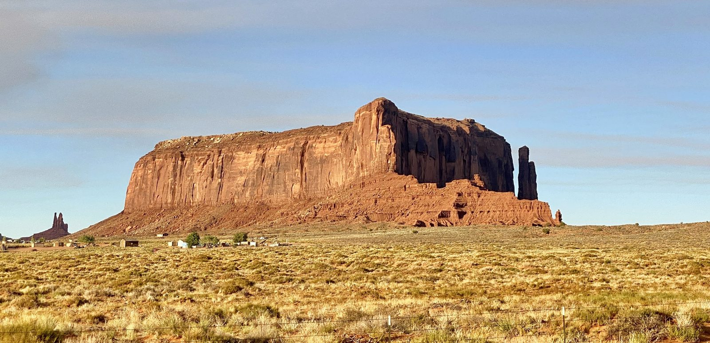
Fig. 8 Sentinel Mesa, en Monument Valley (Utah/Arizona, EE. UU.), remanente de una meseta aislado por erosión diferencial sobre estratos horizontales. Fotografía: Warren LeMay, Wikimedia Commons (CC BY-SA 2.0).#
{kind=link}
2. Paisajes en Márgenes Continentales#
Los bordes de los continentes se dividen en dos grandes tipos: pasivos y activos.
Márgenes Pasivas#
Estos no son bordes de placa. Son el resultado de la ruptura de un continente en el pasado. Los procesos dominantes son de largo plazo y baja intensidad.
Llanura Costera: Una extensa área de bajo relieve formada por la acumulación de sedimentos.
Gran Escarpe: Un escarpe masivo que a menudo marca el límite entre el interior continental elevado y la llanura costera baja (ej. el Gran Escarpe de Brasil o Sudáfrica).
{kind=link}
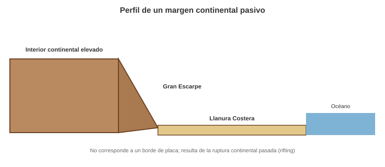
Fig. 9 Perfil característico de un margen continental pasivo, con el interior elevado, el Gran Escarpe y la llanura costera. Elaboración propia.#
Márgenes Activas#
Estos son bordes de placa, donde la interacción directa entre placas genera esfuerzos y crea paisajes muy dinámicos y relieve.
El esfuerzo (σ) es la fuerza aplicada por unidad de área sobre un material. En geología, la fuente de esta fuerza son los movimientos de las placas tectónicas. Existen tres tipos principales de esfuerzo que deforman las rocas:
Esfuerzo Compresivo: Ocurre cuando las fuerzas convergen sobre un cuerpo rocoso, acortándolo en la dirección del esfuerzo. Dominan fallas inversas.
Esfuerzo Tensional (o Extensional): Ocurre cuando las fuerzas divergen de un cuerpo rocoso, alargándolo. Dominan fallas normales.
Esfuerzo de Cizalla (o Cortante): Ocurre cuando las fuerzas actúan en direcciones paralelas pero opuestas, deslizando un bloque con respecto al otro. Dominan fallas de rumbo.
{kind=link}
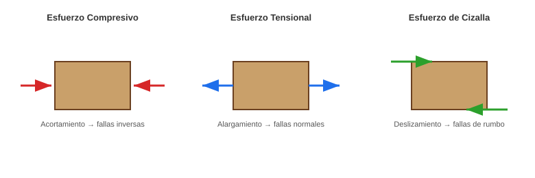
Fig. 10 Los tres tipos principales de esfuerzo tectónico y las fallas que originan. Elaboración propia con base en Burbank and Anderson [2011].#
La deformación (strain) es el cambio en la forma, tamaño o volumen de una roca en respuesta al esfuerzo. Las rocas pueden responder de manera frágil (rompiéndose) en condiciones de baja presión y temperatura, cerca de la superficie; o de forma dúctil (deformándose), dependiendo de la presión y la temperatura.
Las estructuras de carácter frágil que se forman son:
Diaclasas (Joints): Son fracturas en las rocas a través de las cuales no ha habido un desplazamiento medible. Son la respuesta más común a la liberación de esfuerzo y suelen aparecer en conjuntos paralelos.
Fallas (Faults): Son fracturas donde los bloques a cada lado sí se han desplazado uno con respecto al otro. El tipo de falla es un indicador directo del tipo de esfuerzo que la originó:
Falla Normal: Causada por esfuerzo tensional. El bloque de techo (el que está por encima del plano de falla) se mueve hacia abajo con respecto al bloque de piso. Producen extensión y adelgazamiento de la corteza.
Falla Inversa: Causada por esfuerzo compresivo. El bloque de techo se mueve hacia arriba con respecto al bloque de piso. Producen acortamiento y engrosamiento de la corteza. Un tipo especial con un ángulo bajo se llama cabalgamiento (thrust fault).
Falla de Rumbo (Strike-Slip): Causada por esfuerzo de cizalla. El movimiento de los bloques es horizontal, paralelo al rumbo de la falla.
El lenguaje para describir la orientación en el espacio 3D de cualquier estructura planar (un estrato, una falla, una diaclasa) es mediante el rumbo y el buzamiento.
Rumbo (Strike): Es la dirección de la línea horizontal contenida en el plano inclinado. Se mide como un ángulo con respecto al Norte (ej., N45°E o S20°W). Imagina una capa de roca inclinada que se intersecta con la superficie de un lago en calma; la línea de la orilla que se forma es el rumbo.
Buzamiento (Dip): Es el ángulo de máxima inclinación del plano, medido hacia abajo desde la horizontal. Siempre es perpendicular al rumbo. El buzamiento se compone de dos partes: el ángulo de inclinación (de 0° a 90°) y la dirección hacia la que el plano se inclina (ej., SE, NW).
{kind=link}
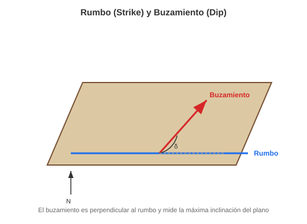
Fig. 11 Rumbo y buzamiento de un plano geológico inclinado. Elaboración propia.#
Geoformas con estratos buzantes#
Cuesta: Se forma sobre estratos con un buzamiento suave (<15-20°). Presenta una ladera frontal empinada (escarpe) y una ladera de reverso larga y suave que sigue la inclinación de la capa resistente.
Hogback: Se forma sobre estratos con un buzamiento fuerte (típicamente >30-40°). Las dos laderas de la cresta son empinadas y tienen una pendiente similar, creando un perfil más simétrico.
Razorback: Un término más informal para un hogback extremadamente agudo y estrecho, formado en estratos casi verticales.
{kind=link}
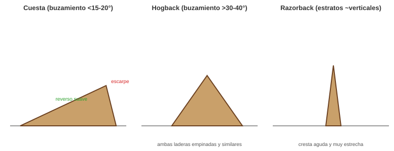
Fig. 12 Perfiles de cuesta, hogback y razorback según el ángulo de buzamiento de los estratos. Elaboración propia.#
Laderas Estructurales#
La forma de una ladera (su pendiente y aspecto) en relieves de rocas estratificadas está íntimamente ligada a la orientación (rumbo y buzamiento) de esas capas.
Ladera Cataclinal (Dip Slope): La superficie de la ladera buza en la misma dirección que los estratos rocosos. La pendiente de la ladera suele ser muy similar o ligeramente inferior al ángulo de buzamiento de las rocas. Estas laderas son el “reverso” de una cuesta y pueden ser susceptibles a grandes deslizamientos traslacionales si existe una capa débil paralela a la superficie.
Ladera Anaclinal (Scarp Slope): La superficie de la ladera buza en la dirección opuesta al buzamiento de los estratos. Estas laderas cortan a través de las capas de roca, por lo que suelen ser más empinadas y abruptas. Su perfil está controlado por la erosión diferencial de las distintas capas. Corresponden al “frente” o escarpe de una cuesta.
Ladera Ortoclinal (Strike Slope): La superficie de la ladera es paralela al rumbo de los estratos (y por lo tanto, perpendicular a la dirección del buzamiento). Estas laderas suelen formar las paredes de los valles que han sido excavados a lo largo del rumbo de una capa de roca blanda.
{kind=link}
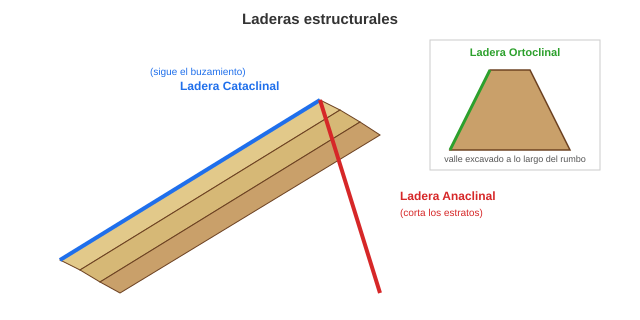
Fig. 13 Laderas cataclinal, anaclinal y ortoclinal en relación con el buzamiento de los estratos. Elaboración propia.#
Tipos de Drenaje Controlados por la Estructura#
La red de ríos de una región (su patrón de drenaje) a menudo se adapta a la estructura geológica, revelando la disposición de pliegues, fallas y tipos de roca.
Drenajes Genéticos (Ajustados a la Estructura). Estos describen cómo se origina una red fluvial en respuesta a la geología.
Drenaje Consecuente: Son los primeros ríos que se forman, fluyendo en la dirección de la pendiente regional original.
Drenaje Subsecuente: Se desarrollan a lo largo de zonas de debilidad, como las capas de roca blanda o fallas. Típicamente, fluyen paralelos al rumbo de los estratos, excavando valles entre las crestas de roca dura (hogbacks o cuestas). Son los ríos principales en un patrón de drenaje enrejado (trellis).
Drenaje Obsecuente y Resecuente: Son afluentes de los ríos subsecuentes. Los obsecuentes fluyen en dirección opuesta al drenaje consecuente (bajando por la ladera anaclinal o escarpe). Los resecuentes fluyen en la misma dirección que el consecuente, pero se desarrollan después y a un nivel topográfico inferior (bajando por la ladera cataclinal).
{kind=link}
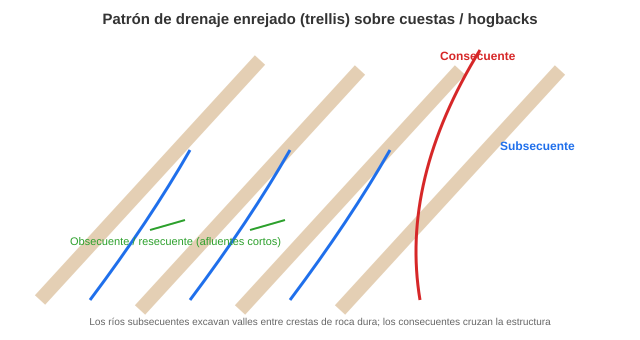
Fig. 14 Patrón de drenaje enrejado (trellis) típico de un relieve de cuestas u hogbacks, con drenajes consecuentes y subsecuentes. Elaboración propia.#
Los drenajes “anómalos” (que desafían la estructura) indican una historia de evolución del paisaje compleja.
Drenaje Sobreimpuesto: Ocurre cuando un río establece su curso sobre una cubierta de rocas horizontales, pero con el tiempo, erosiona y se “encaja” en las rocas plegadas o falladas que había debajo. El río mantiene su patrón original, aunque este no guarde relación con la nueva estructura que está cortando.
Drenaje Antecedente (Antecedent): Se refiere a un río que es más antiguo que una estructura tectónica que se está levantando (como un anticlinal en crecimiento). Si el río tiene suficiente poder erosivo, puede mantener su curso cortando la estructura a medida que esta se eleva, formando un profundo cañón o cluse. El río “antecede” al levantamiento.
Tipos de bordes activos#
A. Bordes Divergentes (Rifting)#
Donde las placas se separan, la corteza es estirada y adelgazada.
Valle del Rift: Una gran depresión alargada limitada por fallas normales.
Horsts y Grabens: Bloques elevados (horst) y hundidos (graben) que forman la topografía característica del rift.
{kind=link}
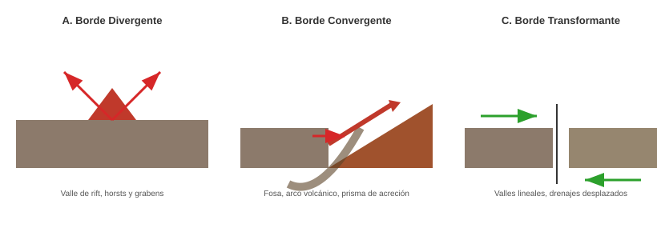
Fig. 15 Los tres tipos de bordes de placa activos y las geoformas asociadas: divergente, convergente y transformante. Elaboración propia con base en Burbank and Anderson [2011].#
{kind=link}
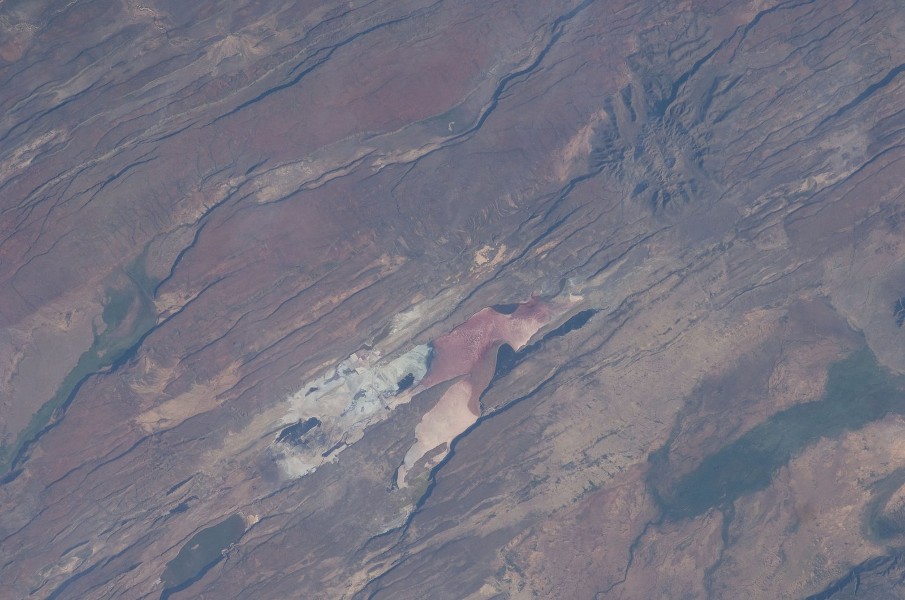
Fig. 16 Valle del Rift de África Oriental en Kenia, fotografiado desde la Estación Espacial Internacional. Fotografía astronauta ISS-30, Wikimedia Commons (NASA, dominio público).#
{kind=link}
{kind=link}
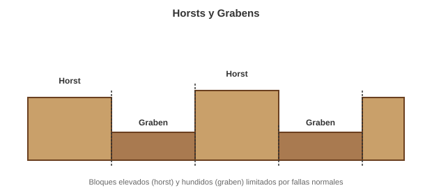
Fig. 17 Bloques elevados (horst) y hundidos (graben) limitados por fallas normales, típicos de zonas de rift. Elaboración propia.#
B. Bordes Convergentes (Subducción y Colisión)#
Donde las placas chocan. El paisaje depende del tipo de corteza que colisiona. Un orógeno, o cinturón orogénico, es una franja de la corteza continental que ha sido intensamente deformada, plegada y fallada por la colisión de placas tectónicas, dando como resultado una cadena montañosa.
Convergencia Oceánica-Oceánica: Subducción de una placa oceánica bajo otra, fusión parcial, volcanismo. Como geoformas se observan la fosa oceánica profunda, el arco de islas volcánicas (ej. Japón, Aleutianas), y una cuenca de retroarco.
Convergencia Oceánica-Continental: Subducción de la placa oceánica (más densa) bajo la continental, magmatismo, y acortamiento cortical (plegamiento y fallamiento inverso). Como geoformas se encuentran el prisma de acreción (sedimentos raspados de la placa que subduce), el arco volcánico continental (una cordillera de volcanes, como los Andes), y una cuenca de antearco (forearc basin).
Convergencia Continental-Continental: Como ninguna placa puede subducir fácilmente, se produce una colisión con intenso acortamiento, engrosamiento cortical y fallamiento inverso (cabalgamientos). No hay volcanismo significativo. Las geoformas son cadenas montañosas no volcánicas de gran altitud (ej. Himalayas), extensas mesetas o plateaux detrás de la cordillera principal (ej. Meseta del Tíbet), y zonas de sutura (la “cicatriz” donde los continentes se unieron).
{kind=link}
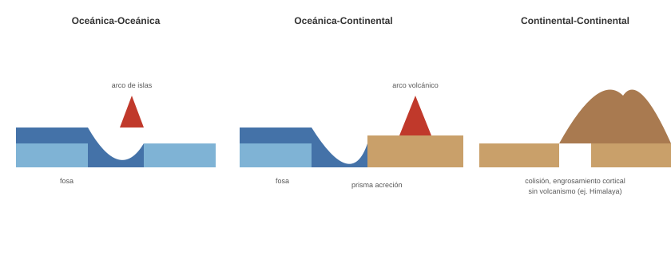
Fig. 18 Los tres tipos de convergencia de placas y sus geoformas características. Elaboración propia con base en Burbank and Anderson [2011].#
C. Bordes de Rumbo o Transformantes#
Donde las placas se deslizan lateralmente una junto a la otra con fallamiento de rumbo (horizontal). Las geoformas típicas son:
Valles Lineales: La falla crea una zona de debilidad que es erosionada fácilmente.
Drenajes Desplazados (Offset Streams): Ríos y valles que son cortados y desplazados por el movimiento de la falla.
Lomos de Obturación (Shutter Ridges): Una cresta que se mueve a lo largo de la falla hasta bloquear la salida de un valle.
Hondonadas de Hundimiento (Sag Ponds): Pequeñas depresiones y lagunas formadas donde la falla crea zonas de extensión local.
Lomo de Presión (Pressure Ridge): es una colina o cordillera alargada que se forma directamente sobre la zona de compresión. El material apilado y levantado crea una cresta topográfica que a menudo está orientada de forma oblicua con respecto al trazo principal de la falla.
Boquerón (Fault Saddle): es una geoforma sutil, una depresión o punto bajo a lo largo de una cresta que está siendo cortada por la falla. La falla tritura y debilita la roca a su paso. La erosión (fluvial o de laderas) actúa de forma mucho más eficiente sobre esta roca debilitada, excavando una muesca, collado o “sillín” en la cresta. Es una geoforma erosional guiada por la estructura.
{kind=link}
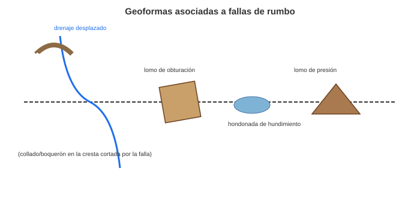
Fig. 19 Geoformas típicas asociadas a fallas de rumbo: drenajes desplazados, lomo de obturación, hondonada de hundimiento y lomo de presión. Elaboración propia.#
Paisajes plegados#
El paisaje plegado es el resultado de la erosión diferencial actuando sobre una serie de rocas sedimentarias que han sido comprimidas y deformadas en pliegues (anticlinales y sinclinales) por esfuerzos tectónicos. La topografía resultante no es el pliegue en sí, sino lo que la erosión ha esculpido a partir de él.
{kind=link}
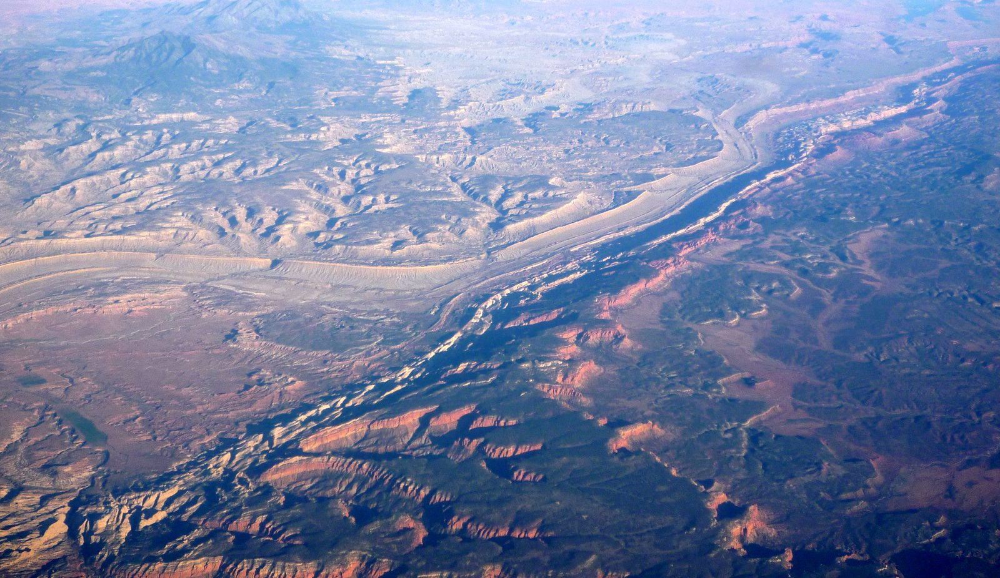
Fig. 20 El Waterpocket Fold, en el Parque Nacional Capitol Reef (Utah, EE. UU.), un monoclinal cuya expresión topográfica ilustra el fuerte control que ejerce la estructura plegada sobre el relieve y el drenaje. Fotografía: Bobak Ha’Eri, Wikimedia Commons (CC BY 3.0).#
{kind=link}
Monte Anticlinal: El anticlinal (pliegue en forma de A ∩) forma una montaña o una cresta elevada, ya que su capa superior resistente aún no ha sido significativamente erosionada.
Valle Sinclinal: El sinclinal (pliegue en forma de U ∪) forma un valle, siguiendo la concavidad de la estructura.
Dos principales tipos de paisaje plegado existen: jurásico y apalachense. La principal diferencia es el grado de erosión: el paisaje jurásico muestra una correspondencia directa entre estructura y relieve, mientras que el apalachense muestra una inversión del relieve debido a una erosión prolongada y profunda [Davis, 1889].
El Paisaje Jurásico (Relieve Conforme)#
Este estilo, nombrado por las Montañas del Jura en Europa, representa una etapa joven de la erosión de un relieve plegado. Aquí, la topografía es un reflejo directo de la estructura geológica subyacente. La erosión comienza a actuar sobre la estructura recién plegada. Las capas superiores y más resistentes definen el relieve.
Combe: Un valle longitudinal que se excava a lo largo del eje de un monte anticlinal. Se forma cuando la erosión rompe la capa dura superior (la “bisagra” del pliegue, debilitada por la tensión) y comienza a vaciar las capas blandas del interior.
Cluse: Un valle transversal estrecho y profundo (una garganta) que corta perpendicularmente un monte anticlinal. A menudo son el resultado de un río antecedente o sobreimpuesto.
Ruz: Una pequeña cresta secundaria, aguda y rectilínea, formada en el flanco de un monte anticlinal, donde una capa dura intermedia es expuesta por la erosión.
Crêt: se refiere a la cresta alargada y asimétrica formada por una capa de roca dura y resistente que ha sido inclinada por el plegamiento y expuesta por la erosión. Esencialmente, un crêt es la geoforma que da lugar a una cuesta (si el buzamiento es suave) o a un hogback (si el buzamiento es fuerte). Su perfil es característico: una ladera muy empinada (anaclinal o “frente”) donde la erosión ha cortado a través de los estratos, y una ladera más suave (cataclinal o “reverso”) que sigue la superficie de la capa resistente inclinada.
Mont dérivé: se traduce como “monte derivado”. Se refiere a una cresta o montaña que no es el resultado directo de la estructura primaria del plegamiento (como el monte anticlinal original), sino que es una forma “derivada” de la erosión diferencial. En muchos casos el mont dérivé y el crêt son prácticamente la misma geoforma. El término enfatiza que esta montaña existe únicamente porque la erosión ha eliminado las rocas blandas que la rodeaban, “derivando” su forma de la estructura resistente que ha quedado expuesta.
{kind=link}
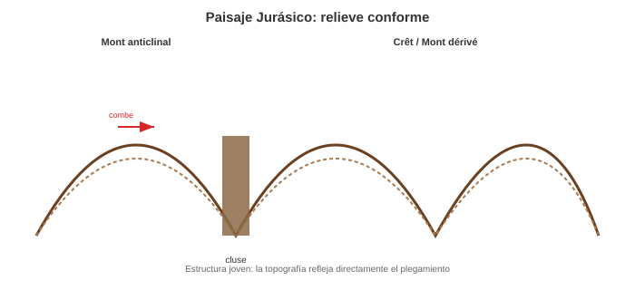
Fig. 21 Geoformas del paisaje jurásico (relieve conforme): mont anticlinal, combe y cluse. Elaboración propia.#
El Paisaje Apalachense (Relieve Invertido)#
Este estilo, nombrado por los Montes Apalaches en Norteamérica, representa una etapa madura o evolucionada de la erosión, donde la relación inicial entre estructura y topografía se ha invertido [Davis, 1889].
La erosión ha actuado durante un largo periodo. La parte superior de los anticlinales, debilitada por la tensión durante el plegamiento, ha sido completamente erosionada (formando valles anticlinales anchos). Los sinclinales, que estaban en un estado de compresión y por lo tanto eran más resistentes, perduran en el paisaje.
Valle Anticlinal: Lo que una vez fue un monte anticlinal ahora es un valle, ya que la erosión ha eliminado por completo su núcleo.
Cresta Sinclinal (o Sinclinal Colgado): Lo que era un valle sinclinal se ha convertido en una cresta o montaña. Esto ocurre porque las capas resistentes del sinclinal, al estar en una posición estructuralmente baja y comprimida, han resistido mejor la erosión generalizada que afectó a los anticlinales circundantes.
{kind=link}
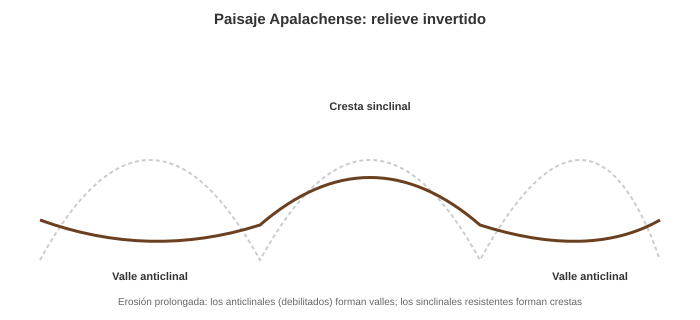
Fig. 22 Geoformas del paisaje apalachense (relieve invertido): el antiguo anticlinal es ahora un valle y el antiguo sinclinal es ahora una cresta. Elaboración propia con base en Davis [1889].#
Isostasia#
La isostasia es el principio de flotación aplicado a la corteza terrestre. Sostiene que la corteza “flota” sobre el manto, que se comporta como un fluido muy denso y viscoso a lo largo del tiempo geológico. La composición química de cada corteza determina su densidad y, por lo tanto, su flotabilidad inherente [Airy, 1855].
Corteza Continental (un promedio de 35-40 km): Está compuesta principalmente por rocas graníticas. Es menos densa (aproximadamente 2.7 g/cm³). Piensa en ella como un bloque de madera.
Corteza Oceánica (un promedio de 7-10 km): Está compuesta por basalto. Es más densa (aproximadamente 3.0 g/cm³). Piensa en ella como un bloque de un plástico pesado.
{kind=link}
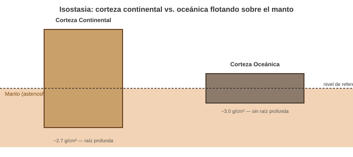
Fig. 23 Principio de isostasia: la corteza continental, más gruesa y menos densa, flota con una raíz profunda; la corteza oceánica, delgada y más densa, flota a menor elevación. Elaboración propia con base en Airy [1855].#
El principio de Arquímedes, que es la base de la isostasia, nos dice que un objeto flotante desplaza un volumen de fluido equivalente a su peso. Para que un bloque grueso y ligero (continente) esté en equilibrio, necesita hundirse profundamente en el manto para desplazar suficiente material (creando una “raíz”), pero por su gran grosor total, una porción significativa también queda expuesta por encima: la elevación continental.
Por el contrario, un bloque delgado y denso (corteza oceánica) no necesita hundirse tanto para alcanzar el equilibrio, y al ser tan delgado, su superficie queda a una elevación mucho menor.
El ajuste isostático es el proceso mediante el cual la litosfera se hunde o se eleva para recuperar el equilibrio isostático después de que se ha añadido o eliminado una carga (masa) en la superficie. Es la respuesta dinámica del planeta para volver a su estado de flotación preferido.
Un ejemplo clásico de ajuste isostático es el rebote postglacial. Durante las edades de hielo, se acumularon capas de hielo de 2 a 3 kilómetros de espesor sobre los continentes. Este peso inmenso provocó que la corteza debajo se hundiera y se “sumergiera” más en el manto. Al final de la última edad de hielo, hace unos 10 000 años, estos glaciares se fundieron, eliminando la carga. Entonces la corteza comenzó a elevarse lentamente para recuperar su nivel de flotación original. Este proceso, conocido como rebote isostático, todavía está ocurriendo hoy en muchas zonas con valores de hasta 1 cm por año.
Otro ejemplo es la erosión de cadenas montañosas. Este proceso ocurre en escalas de tiempo mucho más largas. Cuando se forma una cordillera, la corteza se engrosa y, para soportar la enorme masa de las montañas, desarrolla una “raíz” profunda que se hunde en el manto. Durante millones de años, los ríos, glaciares y deslizamientos erosionan las cimas de las montañas, transportando y eliminando miles de millones de toneladas de roca. A medida que se elimina masa de la superficie, la cordillera se vuelve más “ligera”. Para mantener el equilibrio, toda la placa litosférica se eleva isostáticamente. Este proceso es fundamental porque explica cómo rocas que se formaron a grandes profundidades (como los granitos y las rocas metamórficas) pueden llegar a estar expuestas en la cima de las montañas.
Morfotectónica en Colombia: Un Laboratorio Vivo#
Colombia es un escenario privilegiado para el estudio de la morfotectónica debido a la interacción de las placas de Nazca, Suramérica y el Caribe.
Cratón y Escudo: El Escudo Guayanés en el oriente (Amazonía y Orinoquía) es el núcleo estable con paisajes de bajo relieve y tepuyes (mesas estructurales).
Márgenes Activas: Los Andes colombianos representan un Arco Volcánico Continental (Cordillera Central) y zonas de acrecionamiento (Cordillera Occidental y Serranía del Baudó).
Fallas de Rumbo: El Sistema de Fallas de Romeral y la Falla de Ibagué presentan geoformas clásicas como drenajes desplazados, lomos de presión y valles lineales.
Relieve Invertido: En el Valle Superior del Magdalena, es posible observar estructuras plegadas donde la erosión ha generado relieves conforme e invertidos sobre rocas sedimentarias.
Taller de Autoevaluación#
Control Estructural: ¿Cuál es la diferencia fundamental entre una ladera cataclinal y una anaclinal? ¿Cuál de ellas representa un mayor riesgo geológico por deslizamientos en una zona de alta pluviosidad?
Patrones de Drenaje: Si observa un patrón de drenaje sobreimpuesto que atraviesa una cordillera plegada sin desviarse, ¿qué nos dice esto sobre la cronología relativa entre el río y el levantamiento de la cordillera?
Ambientes Tectónicos: Compare las geoformas resultantes de un borde divergente (rift) con las de un borde de rumbo (transformante). ¿Qué importancia tienen los “shutter ridges” para identificar fallas activas?
Isostasia: Explique por qué el rebote isostático tras el derretimiento de un gran glaciar puede causar que áreas costeras experimenten un descenso aparente del nivel del mar.
Análisis de Campo: Utilizando el concepto de buzamiento y rumbo, describa cómo identificaría en el campo una estructura de hogback frente a una cuesta.